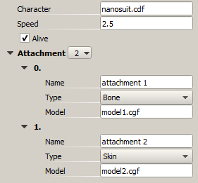
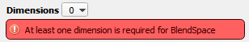
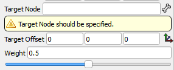

Overview
Features
- Separation of user serialization code from the actual storage format. That is a possibility to switch between XML/JSON/Binary formats without changing user code.
- Reusage of the same serialization code for editing in PropertyTree. Write serialization code once and use it to expose your structure in the editor as a parameters tree.
- Possibility to write serialization in non-intrusive way (as global overloaded functions) without modifying serialized types.
- Easy to change format, i.e. add/remove or rename fields and still be able to load old data.
Tutorial
I will start with some data layout that uses some common features: standard types, enumerations, containers.
Note that I add Serialize method to structures with some fixed signature.
Defining data
#include "Serialization/IArchive.h"
#include "Serialization/STL.h"
enum AttachmentType
{
ATTACHMENT_SKIN,
ATTACHMENT_BONE
};
struct Attachment
{
string name;
AttachmentType type;
string model;
void Serialize(Serialization::IArchive& ar)
{
ar(name, "name", "Name");
ar(type, "type", "Type");
ar(model, "model", "Model");
}
};
struct Actor
{
string character;
float speed;
bool alive;
std::vector<Attachment> attachments;
Actor()
: speed(1.0f)
, alive(true)
{
}
void Serialize(Serialization::IArchive& ar)
{
ar(character, "character", "Character");
ar(speed, "speed", "Speed");
ar(alive, "alive", "Alive");
ar(attachments, "attachments", "Attachment");
}
};
// Implementation file:
#include "Serialization/Enum.h"
SERIALIZATION_ENUM_BEGIN(AttachmentType, "Attachment Type")
SERIALIZATION_ENUM(ATTACHMENT_BONE, "bone", "Bone")
SERIALIZATION_ENUM(ATTACHMENT_SKIN, "skin", "Skin")
SERIALIZATION_ENUM_END()
ar() call takes two string arguments: one is called name, and second label. First one is used to store parameters persistently, e.g for JSON and XML. Second parameter is used for PropertyTree. Why they are different? Label parameter is often longer, more descriptive, contains whitespaces, and may be easily changed without breaking compatibility with old data. Name on the other hand, is c-style identifier. It is also convinient to have name matching variable name, so developer can easily find variable by looking at the data file.
Omitting label parameter (equivalent of passing nullptr) will hide parameter in PropertyTree, but it will be still serialized and can be copied through copy-paste together with its parent.
Note that at the moment SERIALIZATION_ENUM-macros should reside in implementation file (.cpp) as they contain definition of symbols.
Serializing Into/From File
Now your data is ready for serialization. For example you could use Serialization::JSONOArchive:
#include <Serialization/IArchiveHost.h>
Actor actor;
Serialization::SaveJsonFile("filename.json", actor);This will produce content in following format:
{
"character": "nanosuit.cdf",
"speed": 2.5,
"alive": true,
"attachments": [
{ "name": "attachment 1", "type": "bone", "model": "model1.cgf" },
{ "name": "attachment 2", "type": "skin", "model": "model2.cgf" }
]
}Reading data is similar:
#include <Serialization/IArchiveHost.h>
Actor actor;
Serialization::LoadJsonFile(actor, "filename.json");Mentioned functions Save/Load functions are wrappers around IArchiveHost interface, instance of which is located in gEnv->pSystem->GetArchiveHost().
Alternatively, if you have direct access to archives code (if they are located in the same modules, e.g. in CrySystem or EditorCommon) you could use archive classes directly:
#include <Serialization/JSONOArchive.h>
#include <Serialization/JSONIArchive.h>
Serialization::JSONOArchive oa;
Actor actor;
oa(actor);
oa.save("filename.json");
// to get access to the data without saving:
const char* jsonString = oa.c_str();
// and to load
Serialization::JSONIArchive ia;
if (ia.load("filename.json"))
{
Actor loadedActor;
ia(loadedActor);
}Editing in PropertyTree
If you have Serialize method implemented for your types it is enough to get it exposed to the QPropertyTree.

#include <QPropertyTree/QPropertyTree.h>
QPropertyTree* tree = new QPropertyTree(parent);
static Actor actor;
tree->attach(Serialization::SStruct(actor));Note that you can select enumeration values from the list and you can add/remove vector elements by using [ 2 ] button or the context menu.
In the moment of attachment Serialize method will be called to extract properties from your object. As soon as user changes a property in UI Serialize method is called to write properties back to an object.
Important to remember that QPropertyTree holds a reference to attached object, in case it is lifetime is shorter than the tree explicit call to QPropertyTree::detach() should be performed.
Use cases
Non-intrusive serialization
Normally when struct or class instance is passed to the Archive the Serialize method of the instance is called. It is possible to override this behavior by declaring following global function:
bool Serialize(Serialization::IArchive&, Type& value, const char* name, const char* label);
Return value here has the same behavior as IArchive::operator(). For input archives the function returns false when field is missing and wasn't read. For output archives it always returns true. Note that return value does not propagate up. If one of the nested fields is missing, top level block will still return true.
This approach is useful in multiple scenarios:
- Add serialization in non-intrusive way;
- Transform data during serialization;
- Add support for unsupported types, e.g. plain pointers.
Here is an example of adding support for std::pair<> type:
template<class T1, class T2>
struct pair_serializable : std::pair<T1, T2>
{
void Serialize(Serialization::IArchive& ar)
{
ar(first, "first", "First");
ar(second, "second", "Second");
}
}
template<class T1, class T2>
bool Serialize(Serialization::IArchive& ar, std::pair<T1, T2>& value, const char* name, const char* label)
{
return ar(static_cast<pair_serializable<T1, T2>&>(value), name, label);
}Benefit of using inheritance here that you can get access to protected fields. In cases when access policy is not important and inheritance is undesirable you can replace such code with following pattern:
template<class T1, class T2>
struct pair_serializable
{
std::pair<T1, T2>& instance;
pair_serializable(std::pair<T1, T2>& instance) : instance(instance) {}
void Serialize(Serialization::IArchive& ar)
{
ar(instance.first, "first", "First");
ar(instance.second, "second", "Second");
}
}
template<class T1, class T2>
bool Serialize(Serialization::IArchive& ar, std::pair<T1, T2>& value, const char* name, const char* label)
{
pair_serializable<T1, T2> serializer(value);
return ar(serializer, name, label);
}Registering Enum inside Class
SERIALIZATION_ENUM_BEGIN() will not compile if you specify enumeration specified within a class (nested enum).
In such case you can use SERIALIZATION_ENUM_BEGIN_NESTED:
SERIALIZATION_ENUM_BEGIN_NESTED(Class, Enum, "Label")
SERIALIZATION_ENUM(Class::ENUM_VALUE1, "value1", "Value 1")
SERIALIZATION_ENUM(Class::ENUM_VALUE2, "value2", "Value 2")
SERIALIZATION_ENUM_END()Polymorphic Types
Serialization library supports loading of saving of polymorphic types. It is implemented through serialization of smart pointer to base type.
For example if you have following hierarchy:
IBase
- ImplementationA
- ImplementationB
You would need to register derived types with a macro:
SERIALIZATION_CLASS_NAME(IBase, ImplementationA, "impl_a", "Implementation A");
SERIALIZATION_CLASS_NAME(IBase, ImplementationA, "impl_b", "Implementation B");Now you can serialize pointer to base type:
#include <Serialization/SmartPtr.h>
_smart_ptr<IInterfface> pointer;
ar(pointer, "pointer", "Pointer");As usual, first string is used to name the type for persistent storage and second string is a human-readable name for display in PropertyTree.
Customizing presentation in PropertyTree
There are two aspects that can be customized within PropertyTree:
- Layout of the property fields. These are controlled by control sequences in the label (third argument to IArchive::opearator()).
- Decorators. These defined the way specific properties are edited or represented.
Control characters
Control sequences are put as a prefix to the label of the property, i.e. third argument for the archive. Multiple control characters can be put together to combine their effects. For example:
ar(name, "name", "^!<Name"); // inline, read-only, expanded value field| Prefix | Role | Description |
|---|---|---|
| ! | Read only field | Prevents user from changing the value of the property. Non-recursive. |
| ^ | Inline | Inline property on the same line as name of the structure root. |
| ^^ | Inline in front of a name | Inline property in the way that is placed before the name of the parent structure. Useful to add checkboxes before name. |
| < | Expand value field | Expand value part of the property to occupy all available space (usually taking free space |
| > | Contract value field | Reduces width of the value field to its minimal value. Useful to restrict width of inlined fields. |
| >N> | Limit field width to N pixels | Useful for finer control over UI look. Not recommended for use outside of editor. |
| + | Expand row by default. | Can be used to control which structures/containers are expanded by default or not. Use this only when you need per-item control, otherwise QPropertyTree::setExpandLevels is a better option. |
| [S] | Apply S control characters to children. | This allows to apply control character to children properties. Especially useful with containers. |
Decorators
There are two kinds of decorators:
- Wrappers that take original value and implement custom serialization function to do some two-way transformation over it.
For example Serialization/Math.h contains Serialization::RadiansAsDeg(float&) that allows to store and edit angles in radians - Wrappers that do no transformation but their type is used to select custom property implementation in the PropertyTree.
Example of such wrapper would be all Resource Selectors.
| Decorator | Purpose | Defined for types | Context needed |
|---|---|---|---|
| Serialization/Resources.h | |||
| AnimationPath | Selection UI for full animation path. | Any string-like type, like: std::string, string (CryStringT), SCRCRef CCryName | |
| CharacterPath | UI: browse for character path (cdf) | ||
| CharacterPhysicsPath | UI: browse for character .phys-file. | ||
| CharacterRigPath | UI: browse for .rig files. | ||
| SkeletonPath | UI: browse for .chr/.skel files. | ||
| JointName | UI: list of character joints | ICharacterInstance* | |
| AttachmentName | UI: list of characer attachments | ICharacterInstance* | |
| SoundName | UI: list of sounds | ||
| ParticleName | UI: particle effect selection | ||
| Serialization/Decorators/Math.h | |||
| RadiansAsDeg | Edit/store radians as degrees | float, Vec3 | |
| Serialization/Decorators/Range.h | |||
| Range | Sets soft/hard limits for numeric value and provides slider UI. | Numeric types. | |
| Serialization/Callback.h | |||
| Callback | Provides per-property callback function. See Adding Callbacks to PropertyTree | All types apart from compound ones (structs and containers) | |
Example of usage
float scalar;
ar(Serialization::Range(scalar), 0.0f, 1.0f); // provides slider-UI
string filename;
ar(Serialization::CharacterPath(filename), "character", "Character"); // provides UI for file selection with character filterSerialization context
The signature of Serialize method is fixed and this may prevent you from passing additional arguments into nested Serialize methods. To resolve this issue Serialization Context were introduced.
By providing Serialization Context you can pass a pointer of specific type, to a nested Serialize calls. For example:
void Scene::Serialize(Serialization::IArchive& ar)
{
Serialization::SContext sceneContext(ar, this);
ar(rootNode, "rootNode")
}
void Node::Serialize(Serialization::IArchive& ar)
{
if (Scene* scene = ar.FindContext<Scene>())
{
// use scene
}
} Contexts are organized into a linked lists, nodes are stored on stack (withing SContext instance).
You can have multiple contexts. If you provide multiple instance of the same type the innermost context will be retrieved.
You may also use contexts with a PropertyTree without modyfing existing serialization code. The easiest way to do it is to use CContextList (QPropertyTree/ContextList.h):
// CContextList m_contextList;
tree = new QPropertyTree();
m_contextList.Update<Scene>(m_scenePointer);
tree->setArchiveContext(m_contextList.Tail());
tree->attach(Serialization::SStruct(node));Serializing opaque data blocks
It is possible to treat block of the data in the archive in an opaque way. This is mainly used for the Editor to work with data formats it has no complete knowledge of.
Such data blocks can be stored within Serialization::SBlackBox. It can be serialized or deserialized as a any other value. SBlackBox deserialized from an archive can only be serialized with a matching archive. I.e. if you obtained your SBlackBox from JSONIArchive it can be saved only through the JSONOArchive.
Adding callbacks to PropertyTree
When you change a single property within property tree the whole attached object gets de-serialized. At first this may appear wasteful: why would we update all properties where only one was changed? But in practice this approach has number of advantages:
- No need to track lifetime of nested properties. Removes requirement for nested types to be able to be referenced from outside in safe manner.
- Content of the property tree is not a static static data but rather a result of the function invocation. That means that content may be completely dynamic. Together with previous point this allows to serialize/de-serialize variables constructed on stack.
- User of the library is encouraged to work with coarser granularity of data, resulting in smaller amount of code.
Nevertheless, there are situations when it is desirable to know exactly which property changes. There are two ways to archive this:
Compare new value with stored previous value withing Serialize method:
void Type::Serialize(IArchive& ar) { float oldValue = value; ar(value, "value", "Value"); if (ar.IsInput() && oldValue != value) { // handle change } }Use Serialization::Callback.
This decorator provides gives you opportunity to add callback function for each property. It works only with PropertyTree, and should be used only in Editor code:#include <Serialization/Callback.h> using Serialization::Callback; ar(Callback(value, [](float newValue) { /* handle change */ }), "value", "Value");It can also be used together with other decorators, but in rather clumsy way:
ar(Callback(value, [](float newValue) { /* handle change*/ }, [](float& v) { return Range(v, 0.0f, 1.0f); }), "value", "Value");
Second approach is more flexible, but requires user to carefully track lifetime of the objects that are used by the callback lambda/functor.
PropertyTree in MFC window
If your code base still uses MFC but you would like to use PropertyTree with it, there is a wrapper that makes it possible.
#include <IPropertyTree.h> // located in Editor/Include
int CMyWindow::OnCreate(LPCREATESTRUCT pCreateStruct)
{
...
CRect clientRect;
GetClientRect(clientRect);
IPropertyTree* pPropertyTree = CreatePropertyTree(this, clientRect);
...
} IPropertyTree exposes methods of QPropertyTree like Attach, Detach and SetExpandLevels.
Documentation and validation
QPropertyTree provides a way to add short documentation in the form of tooltips and basic validation.
First method allows you to add tooltips in QPropertyTree:
void IArchive::Doc(const char*)void SProjectileParameter::Serialize(IArchive& ar)
{
ar.Doc("Defines projectile physics.");
ar(m_velocity, "velocity", "Velocity");
ar.Doc("Defines initial velocity of the projectile.");
}It adds tooltip to last serialized element, or to the whole block, when used at the beginning of the function.
Two other calls allow you to display warnings and error messages associated with specific property within property tree.
template<class T> void IArchive::Warning(T& instance, const char* format, ...)
template<class T> void IArchive::Error(T& instance, const char* format, ...)For example:
void BlendSpace::Serialize(IArchive& ar)
{
ar(m_dimensions, "dimensions, "Dimensions");
if (m_dimensions.empty())
ar.Error(m_dimensions, "At least one dimension is required for BlendSpace");
}
Warning messages look as follows:

Drop-down with a dynamic list
If you want to specify enumeration value I suggest you to use enum registration macro from Defining Data section.
There are two ways to define drop down. One is to transform your data into Serialization::StringListValue. Below is a little example of a custom reference.
// a little decorator that would annotate string as a our special reference
struct MyReference
{
string& str;
MyReference(string& str) : str(str) {}
};
inline bool Serialize(Serialization::IArchive& ar, MyReference& wrapper, const char* name, const char* label)
{
if (ar.IsEdit())
{
Serialization::StringList items;
items.push_back("");
items.push_back("Item 1");
items.push_back("Item 2");
items.push_back("Item 3");
Serialization::StringListValue dropDown(items, wrapper.str.c_str());
if (!ar(dropDown, name, label))
return false;
if (ar.IsInput())
wrapper.str = dropDown.c_str();
return true;
}
else
{
// when loading from disk we are interested only in the string
return ar(wrapper.str, name, label);
}
} Now you can construct MyReference on the stack within Serialize method to serialize a string as a drop down item:
struct SType
{
string m_reference;
void SType::Serialize(Serialization::IArchive& ar)
{
ar(MyReference(m_reference), "reference", "Reference");
}
};Another way would require you to implement custom PropertyRow in UI. This takes a bit more effort but allows to move the code that creates list of possible items entirely into editor code.